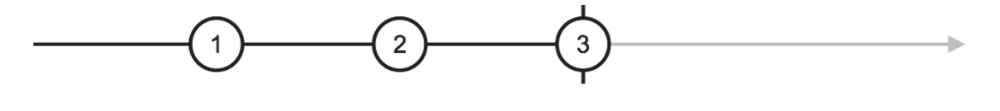
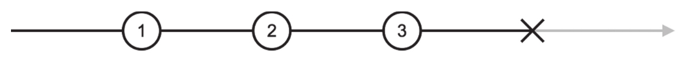
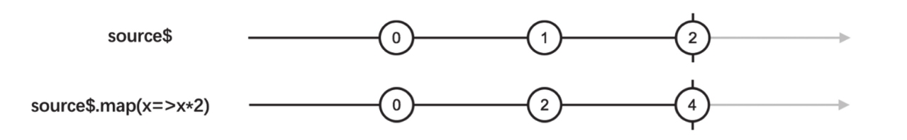

我们已经了解了关于RxJS的基本知识，不过，在我们继续深入了解其他功能之前，要先了解一个学习RxJS的利器——弹珠图（Marble Diagram）。
1.弹珠图语义
RxJS中的Observable代表一个数据流，这个概念需要一点想象力，简单的数据流还是可以靠大脑来想象，对于复杂一点的场景，大脑可能就不够用了，所以需要其他形象且具体的方式来描述数据流，这种方式就是“弹珠图”。
图2-5就是一个弹珠图的例子，这个弹珠图所表示的数据流，每间隔一段时间吐出一个递增的正整数，吐出到3的时候结束。因为每一个吐出来的数据都像是一个弹珠，所以这种表示方式叫做弹珠图。
在弹珠图中，每个弹珠之间的间隔，代表的是吐出数据之间的时间间隔，用这种形式，能够很形象地看清楚一个Observable对象中数据的分布。
根据弹珠图的传统，竖杠符号|代表的是数据流的完结，对应调用下游的complete函数，在图2-5中，数据流吐出数据3之后立刻就完结了。

图2-5 弹珠图
符号×代表数据流中的异常，对应于调用下游的error函数，如图2-6所示。

图2-6 产生异常的弹珠图
我们已经知道一个Observable对象只能有一种完结形式，complete或者error，所以在一个Observable对象的弹珠图上，不可能既有符号|也有符号×。
2.弹珠图工具
在网站http://rxmarbles.com/ 上，可以看到主要的操作符的弹珠图，只可惜这个网站上展示的操作符并不完全。
另一个网站工具https://rxviz.com/ 上可以编写任意Observable对象来查看弹珠图，比如，产生图2-6中弹珠图的代码就是这样：
Rx.Observable.create(obs => {
let num = 1;
setInterval(() => {
if (num > 3) {
obs.error();
}
obs.next(num++);
}, 1000);
})
3.操作符的弹珠图
为了描述操作符的功能，弹珠图中往往会出现多条时间轴，因为大部分操作符的工作都是把上游的数据转为传给下游的数据，在弹珠图上必须把上下游的数据流都展示出来，比如，最简单的map操作符弹珠图如图2-7所示。

图2-7 map的弹珠图
在图2-7中，存在两个数据流的横轴，上面的横轴代表的是map的上游source$，下面的横轴代表source$.map传递给下游的数据流，大部分操作符就是这样工作的，根据上游数据流产生下游数据流。
在后续章节中，我们都会利用弹珠图来说明Observable中的数据流。